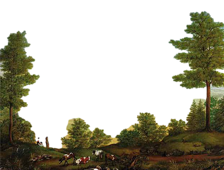
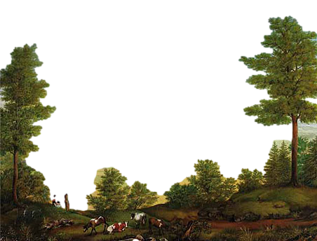

Filozofie nie miały takie wpływu
na kształtowanie się poglądów estetycznych.
Natura jawiła się w oświeceniu przede wszystkim
jako przedmiot do naśladowania.


Filozofie nie miały takie wpływu
na kształtowanie się poglądów estetycznych.
Natura jawiła się w oświeceniu przede wszystkim
jako przedmiot do naśladowania.

Dlaczego?
Bo pojmowano naturę jako to, co ogólne i ponadjednostkowe.
Natura jako przedmiot literackiego naśladowania to – zarówno w starożytności, jak i w okresie renesansu i oświecenia – tyle co „rzeczywistość ludzka”, reprezentatywnie ukazywana przez fikcyjnych bohaterów i ich losy.
Sztuka renesansowa znała natomiast tendencje naturalistyczne,
będące wyrazem fascynacji odkrywaną przez naukę przyrodą
albo nawet formą współzawodnictwa z nią.
Ale literatura musiała mieć aspiracje poznawcze, a te winny dążyć
do uzyskania uniwersalistycznej wiedzy o świecie. Prawdziwa wiedza to wiedza o istocie rzeczy, a nie o
Stąd we Francji w XVII wieku powstały dwa pojęcia natury:
NATURA CZYSTA
- wybierana przez Starożytników
- materialna strona rzeczywistości przyrodniczej i społecznej
- pierwotna natura, pozbawiona darów nadprzyrodzonych
NATURA IDEALNA
- wybierana przez Nowożytników
- idealny model rzeczy i zjawisk
- tylko ideał ładu i harmonii, zgodność z rozumem i moralnymi zadaniami sztuki
- dostrzeżenie szans przeniesienia uniwersalnego ideału w czasy współczesne
Pojęcia te wielokrotnie zostały przemycane do
teorii literackich oraz do pojmowania dzieła
jako przedmiotu wyobraźni artysty (więcej w kolejnych zakładkach).
Warto wskazać na Charlesa Perraulta, który podzielił naturę na:
| czysta natura | natura piękna | natura idealna |
|---|---|---|
| dzika pospolita |
rezultat rozumnej, estetycznej i etycznej selekcji zjawisk |
zbliżająca dzieło do utworzonej w umyśle i wyobraźni artysty "idei" |
Wskazane możliwości rozumienia natury jako przedmiotu naśladowania w dziele literackim występowały również w polskich teoriach literackich (patrz zakładka: W teorii literatury).